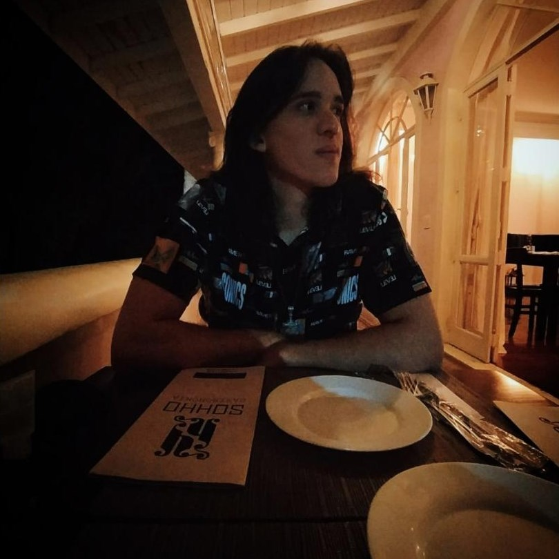

Samuel Canuto Sales
University Student | Dev
Undergraduate student in Information Systems at the Federal Technological University of Paraná and former CEO of Odin Stock, a company specialized in international product intermediation. I have experience in dealing with people, a commitment to problem-solving, and a knack for learning new things.
Languages
- Portuguese | Native
- English | Advanced
Skills
- HTML | Advanced
- CSS | Advanced
- C | Basic
- Ptyhon | Basic
- Java | Basic
Education
-
2021 - 2025 | Bachelor's in Information Systems
Federal Technological University of Paraná - UTFPR
Courses
-
2023 - Present | Full Stack Javascript Course
Thiago M. Medeiros
-
2023 - Present | Curso.dev
Filipe Deschamps
Professional Experience
-
Odin Stock
CEO - Chief Executive Officer
Company specializing in international product intermediation, founded by me in 2021, aiming at the negotiation and importation of products from Nordic culture to the end consumer.
-
Information Technology Management Directorate - UTFPR
Intern
Development of web applications (front end) using technologies: HTML 5 and CSS 3.